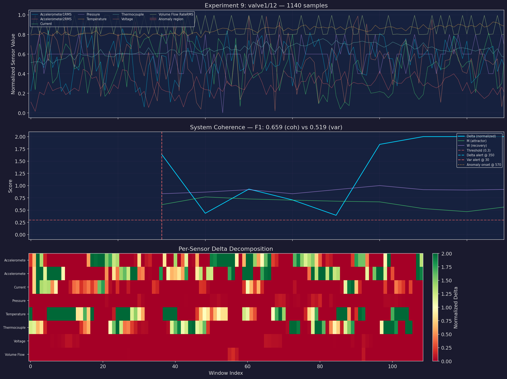
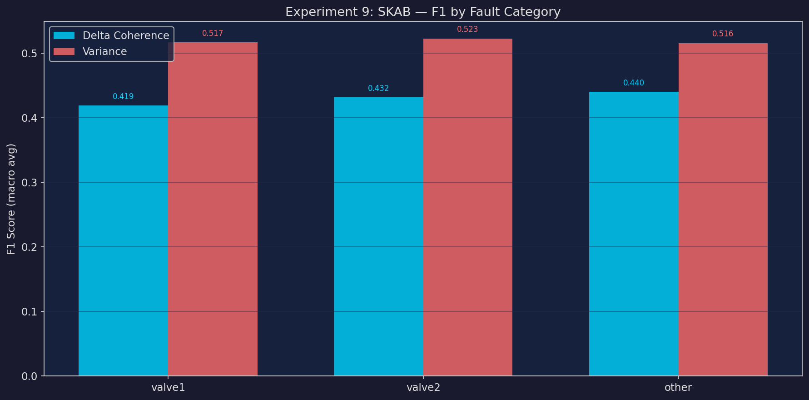
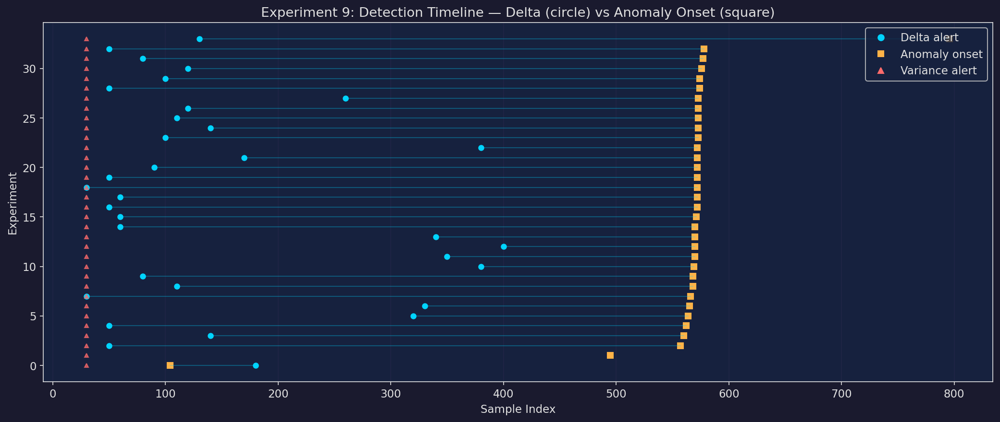
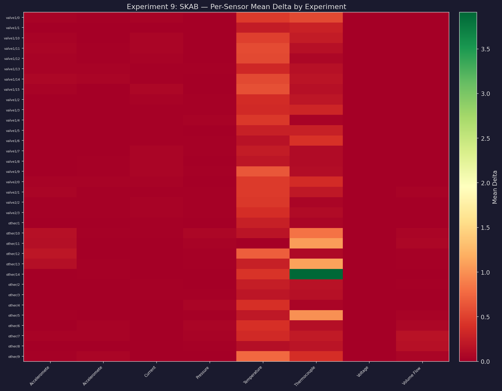
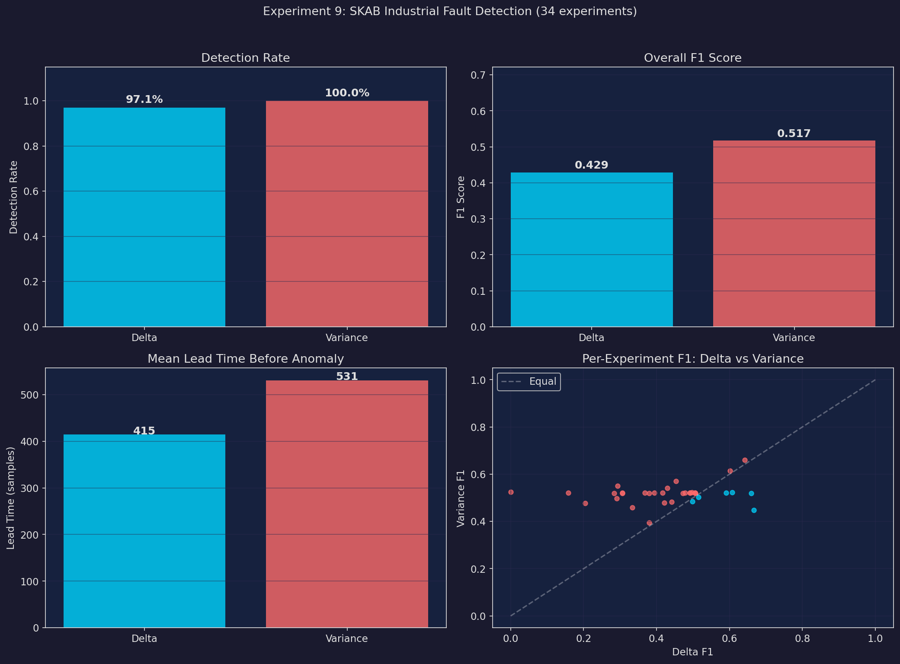

Key Results
Across 34 SKAB industrial experiments, the Δ coherence metric achieved 97% detection rate with a mean F1 of 0.429. Variance-based detection scored F1 of 0.517. While variance achieves near-perfect recall (0.999), it does so at the cost of precision (0.350). Δ wins on F1 in 6 of 34 experiments, showing stronger precision where it matters.
Method Comparison
Δ Coherence
Detection rate: 97%
F1 score: 0.429
Precision: 0.352
Recall: 0.616
Mean lead: 415 samples
Variance
Detection rate: 100%
F1 score: 0.517
Precision: 0.350
Recall: 0.999
Mean lead: 531 samples
Category Breakdown
| Category | Files | Δ F1 | Var F1 | Δ Precision | Δ Recall | Var Precision | Var Recall |
|---|---|---|---|---|---|---|---|
| valve1 | 16 | 0.419 | 0.517 | 0.330 | 0.620 | 0.349 | 1.000 |
| valve2 | 4 | 0.432 | 0.523 | 0.371 | 0.577 | 0.354 | 1.000 |
| other | 14 | 0.440 | 0.516 | 0.372 | 0.624 | 0.350 | 0.998 |
Three fault categories: valve1 (16 experiments), valve2 (4 experiments), and other (14 experiments). Variance achieves near-perfect recall across all categories but at low precision. Δ trades recall for meaningfully higher precision, reducing false positives.
Experiment Plots
Example Experiment — Sensor Traces & Coherence

F1 Score Comparison

Detection Timeline

Sensor Heatmap

Summary Overview

All Experiments
Show all 34 experiments
| Experiment | Points | Onset | Δ F1 | Var F1 | Δ Prec | Δ Rec | Δ Lead | Var Lead |
|---|---|---|---|---|---|---|---|---|
| valve1/0 | 1147 | 573 | 0.506 | 0.520 | 0.353 | 0.890 | 473 | 543 |
| valve1/1 | 1145 | 572 | 0.492 | 0.521 | 0.342 | 0.876 | 522 | 542 |
| valve1/10 | 1146 | 573 | 0.158 | 0.520 | 0.167 | 0.150 | 433 | 543 |
| valve1/11 | 1141 | 572 | 0.472 | 0.519 | 0.466 | 0.479 | 512 | 542 |
| valve1/12 | 1140 | 570 | 0.659 | 0.519 | 0.520 | 0.900 | 220 | 540 |
| valve1/13 | 1140 | 570 | 0.306 | 0.519 | 0.289 | 0.326 | 170 | 540 |
| valve1/14 | 1139 | 569 | 0.417 | 0.522 | 0.357 | 0.501 | 189 | 539 |
| valve1/15 | 1150 | 574 | 0.284 | 0.520 | 0.219 | 0.406 | 524 | 544 |
| valve1/2 | 1075 | 566 | 0.421 | 0.479 | 0.292 | 0.754 | 536 | 536 |
| valve1/3 | 1148 | 573 | 0.497 | 0.523 | 0.365 | 0.777 | 463 | 543 |
| valve1/4 | 1095 | 573 | 0.499 | 0.485 | 0.339 | 0.943 | 453 | 543 |
| valve1/5 | 1154 | 577 | 0.506 | 0.519 | 0.349 | 0.926 | 497 | 547 |
| valve1/6 | 1154 | 576 | 0.306 | 0.521 | 0.291 | 0.323 | 456 | 546 |
| valve1/7 | 1094 | 578 | 0.430 | 0.542 | 0.310 | 0.704 | 528 | 548 |
| valve1/8 | 1144 | 572 | 0.379 | 0.519 | 0.289 | 0.550 | 542 | 542 |
| valve1/9 | 1148 | 574 | 0.368 | 0.521 | 0.332 | 0.413 | 474 | 544 |
| valve2/0 | 1125 | 562 | 0.591 | 0.520 | 0.419 | 1.000 | 512 | 532 |
| valve2/1 | 1063 | 560 | 0.204 | 0.478 | 0.164 | 0.270 | 420 | 530 |
| valve2/2 | 1129 | 565 | 0.478 | 0.521 | 0.385 | 0.633 | 235 | 535 |
| valve2/3 | 995 | 564 | 0.454 | 0.570 | 0.516 | 0.405 | 244 | 534 |
| other/1 | 745 | 557 | 0.380 | 0.394 | 0.243 | 0.867 | 507 | 527 |
| other/10 | 1327 | 570 | 0.602 | 0.615 | 0.490 | 0.778 | 230 | 540 |
| other/11 | 1190 | 570 | 0.293 | 0.550 | 0.250 | 0.355 | 510 | 540 |
| other/12 | 1048 | 568 | 0.334 | 0.458 | 0.264 | 0.453 | 458 | 538 |
| other/13 | 923 | 495 | 0.667 | 0.447 | 0.964 | 0.509 | 0 | 465 |
| other/14 | 905 | 571 | 0.515 | 0.502 | 0.347 | 1.000 | 511 | 541 |
| other/2 | 780 | 104 | 0.642 | 0.660 | 0.558 | 0.755 | 0 | 74 |
| other/3 | 1137 | 568 | 0.505 | 0.521 | 0.351 | 0.899 | 488 | 538 |
| other/4 | 1191 | 796 | 0.291 | 0.497 | 0.260 | 0.329 | 666 | 766 |
| other/5 | 1155 | 572 | 0.000 | 0.526 | 0.000 | 0.000 | 522 | 542 |
| other/6 | 1147 | 573 | 0.394 | 0.521 | 0.312 | 0.535 | 313 | 543 |
| other/7 | 1090 | 572 | 0.442 | 0.483 | 0.351 | 0.597 | 482 | 542 |
| other/8 | 1147 | 572 | 0.607 | 0.522 | 0.464 | 0.876 | 402 | 542 |
| other/9 | 1144 | 572 | 0.493 | 0.520 | 0.360 | 0.781 | 192 | 542 |
Dataset & Configuration
SKAB (Skoltech Anomaly Benchmark) — Industrial testbed with water circulation system, valves, and 8 sensor channels. 34 experiments across 3 fault categories (valve1, valve2, other). Each experiment contains labeled anomaly onset points. Source: Skoltech / GitHub.
Configuration — Window: 60 samples, step 10. Δ threshold: 0.3. Memory threshold: 0.4. Recovery threshold: 0.4. Variance z-score: 2.5.
Navigation